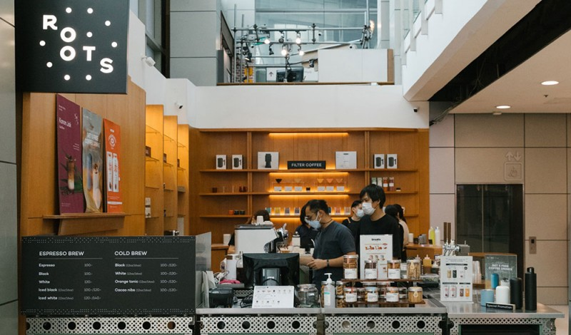
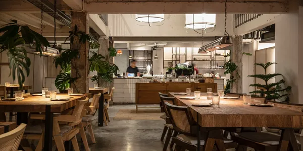
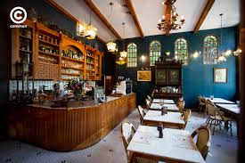
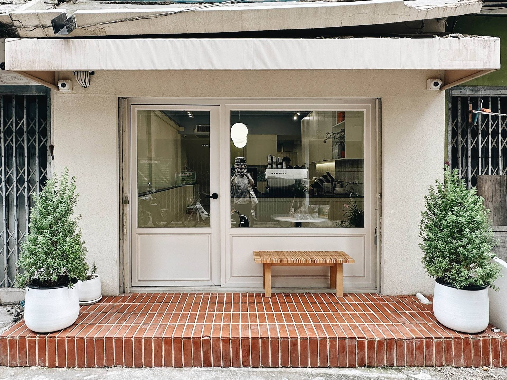
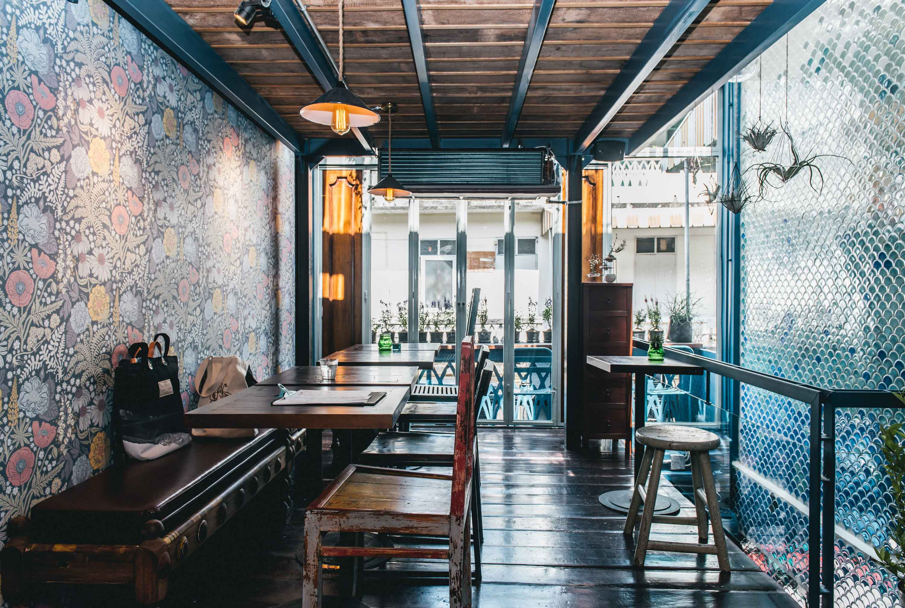

คาเฟ่น่าไปในกรุงเทพมหานคร

Roots Coffee
คาเฟ่กาแฟพิเศษชื่อดังของกรุงเทพ โดดเด่นด้วยเมล็ดกาแฟคุณภาพและสไตล์มินิมอล

Luka Cafe
คาเฟ่และร้านอาหารสไตล์ยุโรป บรรยากาศอบอุ่น เหมาะกับการนั่งชิลในเมือง

Featherstone Cafe
คาเฟ่สไตล์วินเทจยุโรป ตกแต่งสวย เหมาะกับการถ่ายรูปและพักผ่อน

Something About Us
คาเฟ่โทนอบอุ่นย่านอารีย์ ขนมและกาแฟรสชาติดี เหมาะกับสายคาเฟ่ฮอปปิ้ง

Too Fast To Sleep
คาเฟ่เปิด 24 ชั่วโมง เหมาะสำหรับอ่านหนังสือ ทำงาน และนั่งยาว

Blue Whale Cafe
คาเฟ่โทนสีน้ำเงินใกล้วัดโพธิ์ มีมุมถ่ายรูปสวยและเครื่องดื่มซิกเนเจอร์